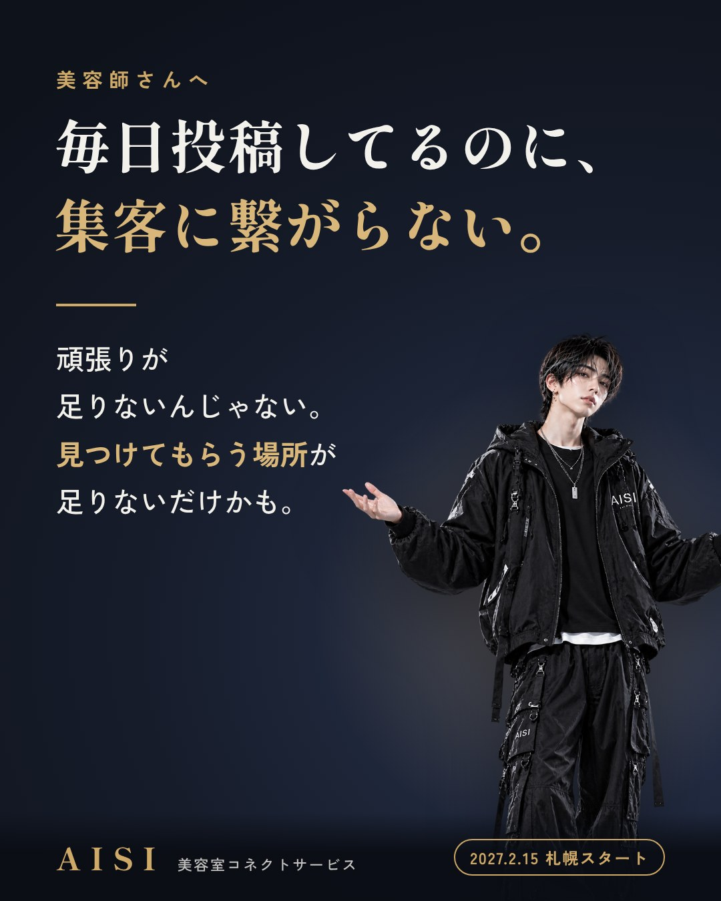
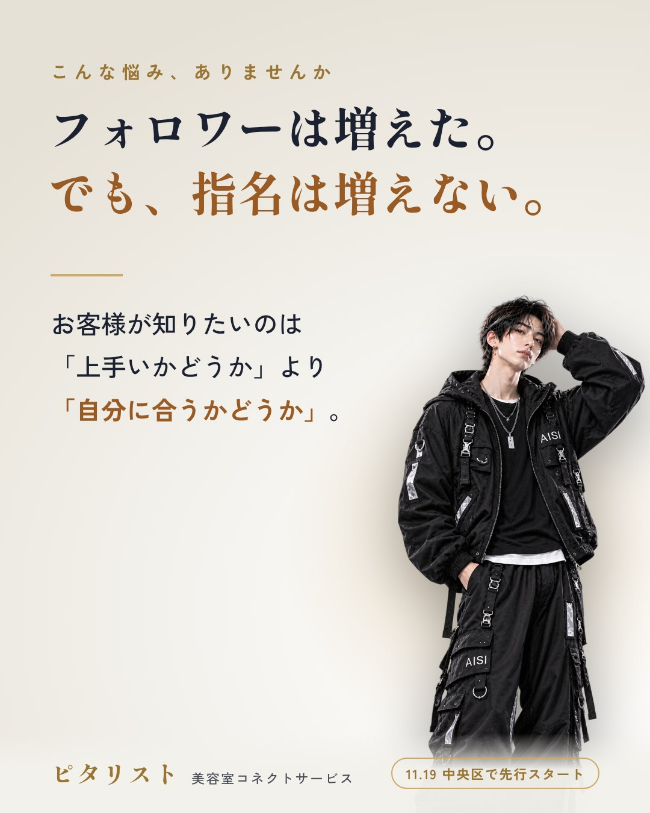
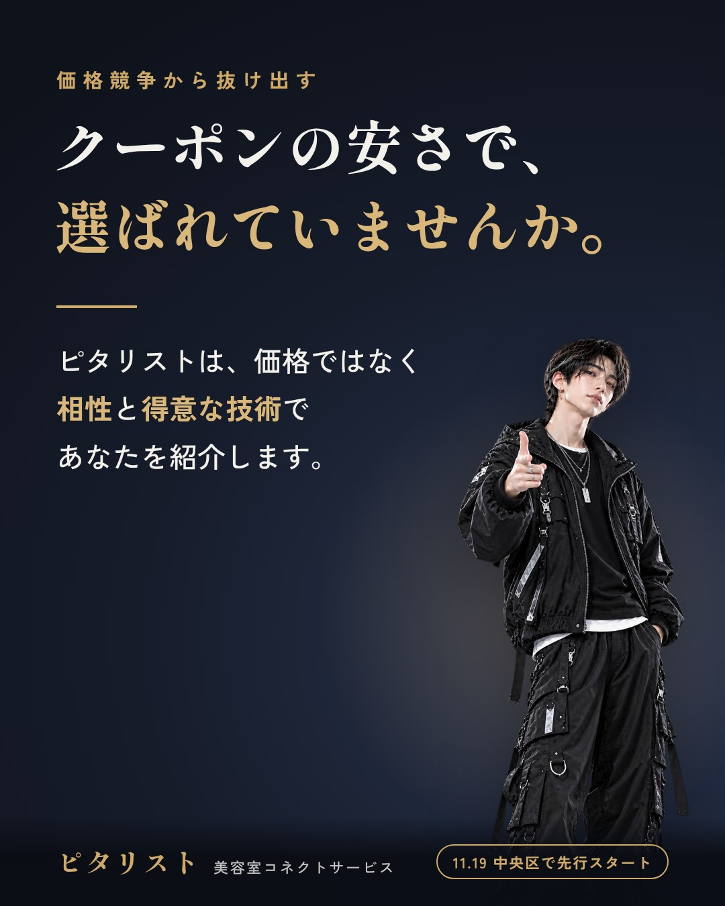
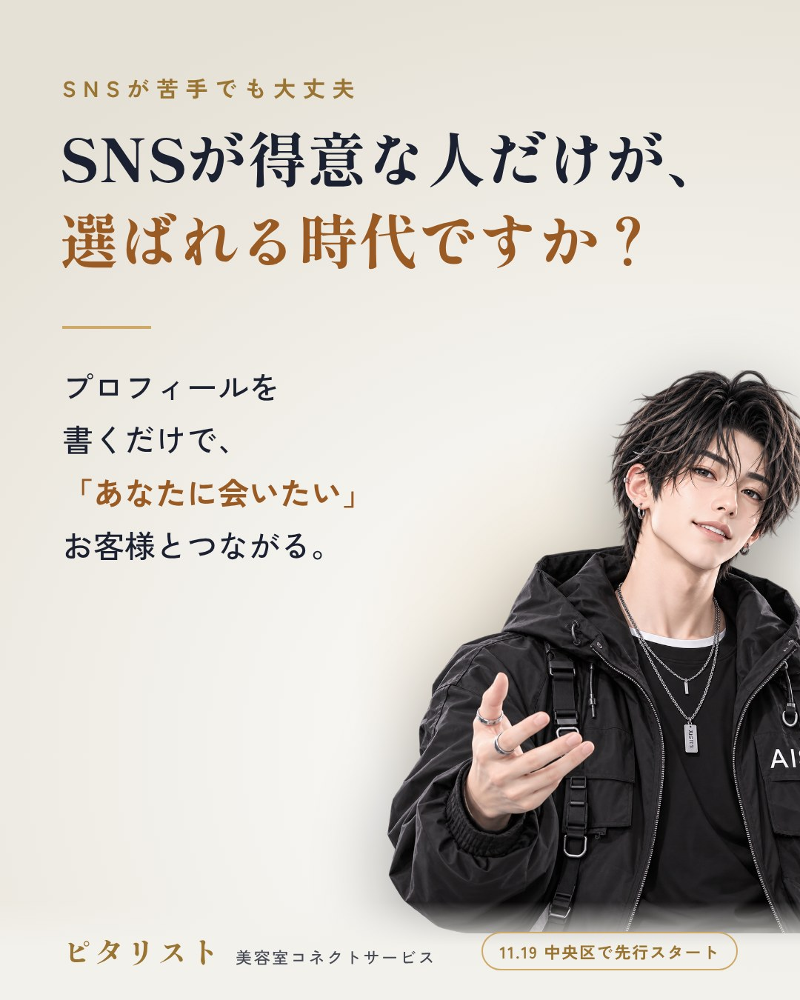
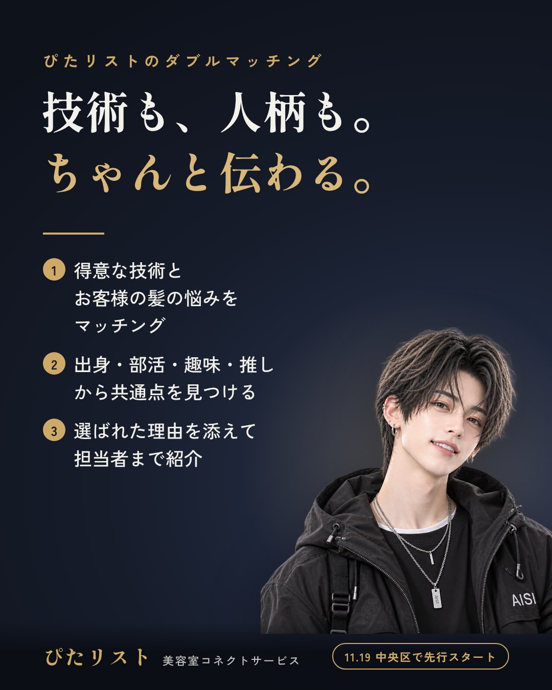
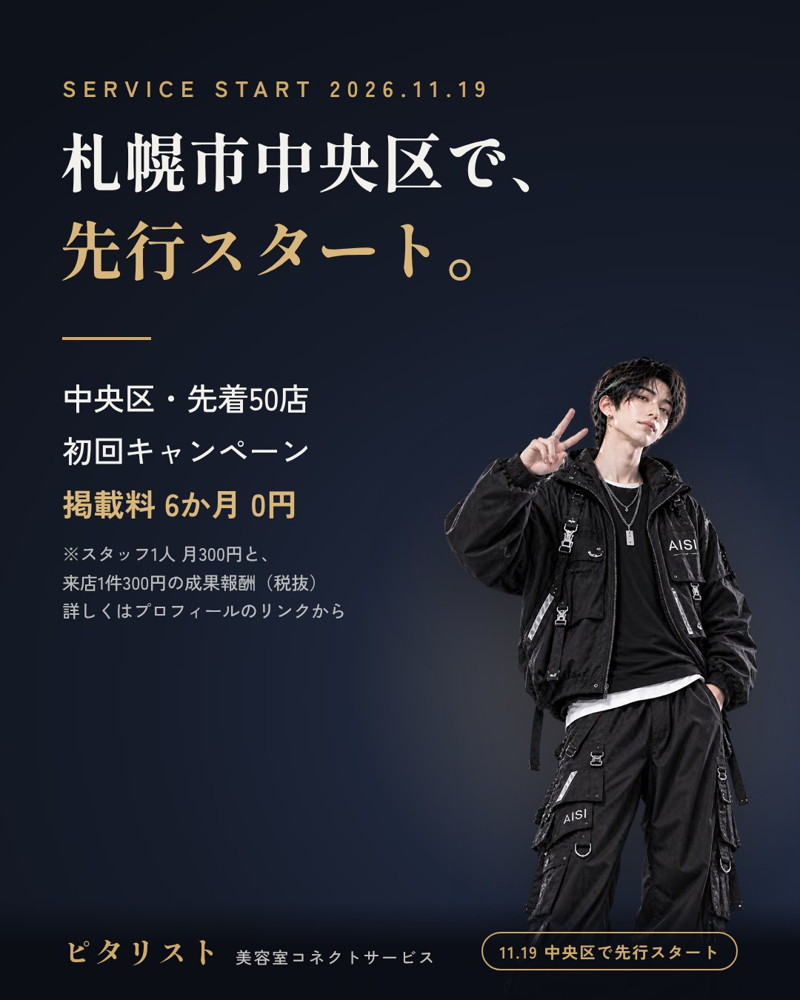

 POST 01 毎日投稿してるのに、集客に繋がらない。 画像を保存投稿文をコピー 毎日投稿してるのに、集客に繋がらない。 撮影して、加工して、文章を考えて。 営業後や休みの日まで使って続けているのに、 予約にはなかなか結びつかない。 それは、あなたの頑張りが足りないからではありません。 お客様に「見つけてもらう場所」が足りないだけかもしれません。 ぴたリストは、お客様の好みや悩みから 「この人に会いたい」と思える美容師を紹介するサービスです。 2026年11月19日（木）、札幌市中央区で先行スタートします。 詳しくはプロフィールのリンクから。 #美容師 #美容師集客 #美容室経営 #美容師の悩み #美容師SNS #指名集客 #札幌美容室 #札幌美容師 #サロンワーク #ぴたリスト
 POST 02 フォロワーは増えた。でも、指名は増えない。 画像を保存投稿文をコピー フォロワーは増えた。でも、指名は増えない。 いいねは付くのに、予約には繋がらない。 その理由は、とてもシンプルです。 お客様が本当に知りたいのは 「この人は上手いか」よりも 「この人は自分に合うか」だから。 ぴたリストは、得意な技術や人柄から お客様との相性を見て、担当者まで紹介します。 詳しくはプロフィールのリンクから。 #美容師 #美容師集客 #美容室経営 #美容師の悩み #美容師SNS #指名集客 #札幌美容室 #札幌美容師 #サロンワーク #ぴたリスト
 POST 03 クーポンの安さで、選ばれていませんか。 画像を保存投稿文をコピー クーポンの安さで、選ばれていませんか。 価格で選ばれたお客様は、 もっと安いお店が見つかれば、そちらへ移ってしまいます。 ぴたリストが紹介するときの基準は、価格ではありません。 「相性」と「得意な技術」です。 あなたの強みを分かったうえで来てくれるお客様と、 長く続く関係をつくりませんか。 詳しくはプロフィールのリンクから。 #美容師 #美容師集客 #美容室経営 #美容師の悩み #美容師SNS #指名集客 #札幌美容室 #札幌美容師 #サロンワーク #ぴたリスト
 POST 04 SNSが得意な人だけが、選ばれる時代ですか？ 画像を保存投稿文をコピー SNSが得意な人だけが、選ばれる時代ですか？ 技術には自信がある。 でも、発信は苦手。毎日続ける時間もない。 そんな美容師さんこそ、損をしてほしくありません。 ぴたリストに必要なのは、プロフィールを書くことだけ。 得意な技術、出身、趣味、推し。 あなたらしさが、そのまま出会いのきっかけになります。 SNSを頑張らなくても、 「あなたに会いたい」お客様とつながれます。 詳しくはプロフィールのリンクから。 #美容師 #美容師集客 #美容室経営 #美容師の悩み #美容師SNS #指名集客 #札幌美容室 #札幌美容師 #サロンワーク #ぴたリスト
 POST 05 技術も、人柄も。ちゃんと伝わる。 画像を保存投稿文をコピー 技術も、人柄も。ちゃんと伝わる。 ぴたリストの「ダブルマッチング」は、 お店と担当者の両方を、お客様に合わせて選びます。 ① 得意な技術と、お客様の髪の悩みをマッチング ② 出身・部活・趣味・推しから共通点を見つける ③ 選ばれた理由を添えて、担当者まで紹介 「なぜこの人なのか」が分かるから、 お客様は安心して予約できます。 詳しくはプロフィールのリンクから。 #美容師 #美容師集客 #美容室経営 #美容師の悩み #美容師SNS #指名集客 #札幌美容室 #札幌美容師 #サロンワーク #ぴたリスト
 POST 06 札幌市中央区で、先行スタート。 画像を保存投稿文をコピー 2026年11月19日（木）、ぴたリストが札幌市中央区で先行スタートします。 それに合わせて、中央区のサロンさま先着50店に向けた 初回キャンペーンを行います。 ・掲載料：掲載を始めた月から6か月間 0円 ・LINEに登録するスタッフ1人あたり：月300円 ・成果報酬：ぴたリストからの予約でご来店があった分だけ、1件300円（キャンセルは0円） （金額はすべて税抜） 7か月目からは、月5,000円または6,000円のプランに切り替わります。 続けるかどうかは、そのときに決めていただけます。 2027年2月15日（月）からは、札幌全域での本番スタートです。 掲載のご相談は、プロフィールのリンクからお気軽にどうぞ。 ━━━━━━━━━━━━━━━━━━━━ ハッシュタグ（全投稿共通） ━━━━━━━━━━━━━━━━━━━━ #美容師 #美容師集客 #美容室経営 #美容師の悩み #美容師SNS #指名集客 #札幌美容室 #札幌美容師 #サロンワーク #ぴたリスト #美容師 #美容師集客 #美容室経営 #美容師の悩み #美容師SNS #指名集客 #札幌美容室 #札幌美容師 #サロンワーク #ぴたリスト